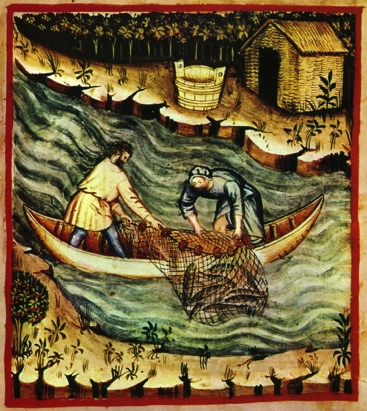

Say’s Law and the Role of Government
1 Say’s Law and the Role of Government
- The Central Disputes of Macroeconomics
2 Development of Say’s Law
- What is called “Say’s Law” is a group of related propositions developed by:
- Adam Smith
- Jean Baptiste Say
- James Mill

3 Post-Napoleonic Depression

- Goods piled up unsold on the docks: What was going on?
4 What Is Say’s Law?
- Thomas Sowell lists seven different propositions:
- Production necessarily generates purchasing power of equal value… so output can always be sold at cost-covering prices. (James Mill)
- People’s behaviour patterns are such that they will not desire to save more than they desire to invest… they only hold money for transactions. (Adam Smith)
- Investment just transfers aggregate demand to the future. (Adam Smith)
5 What Is Say’s Law?
- Increased supply creates correspondingly increased demand. (J.B. Say)
- People work to consume as much as they output, so that aggregate demand equals aggregate supply both before and after the fact. (James Mill)
- Increased savings increase the rate of growth. (Adam Smith)
- Periods of unsold goods are due to imbalances in production, not too much production.
6 The Challenge from Malthus and Sismondi
- Imagine Bob, Silas, and I are live by fishing a river with a net. In three hours a day, we each catch about five or six fish, enough to feed us well. Then we spend the rest of the day discussing philosophy.
- One day, Silas says, "Guys, we could really increase our productivity if we worked six hours a day." Bob and I reluctantly go along. That day, we each catch a dozen fish, but are too tired to discuss philosophy.

7 The Challenge from Malthus and Sismondi
- We each eat six of the fish and feel decently full. We eat three more each, and now we're stuffed. We take our last three and bury them in the sand, thinking perhaps they'll make the soil more fertile. Then we talk about the increased work load, and all decide, "Man, that just wasn't worth it! It was better when we had more leisure time to discuss philosophy.”
- We just had a general glut. Malthus and Sismondi understood that we could get rid of all of our production at some price, for instance, the "price" we receive in more fertile soil for burying some of the fish, i.e., we sold our all of our product, but at a loss. The problem is that price isn't sufficient to prompt us to continue that level of production. They also both realized that with better technology, a new production possibilities frontier would emerge, and what once represented a glut would no longer do so. (For instance, if we had pans for extracting sea salt from the ocean through evaporation, we might have salted four or five of the fish we caught, and eaten our preserved catch later when we spent a day making fishing nets instead of fishing.)